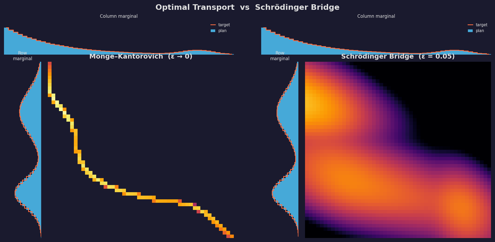
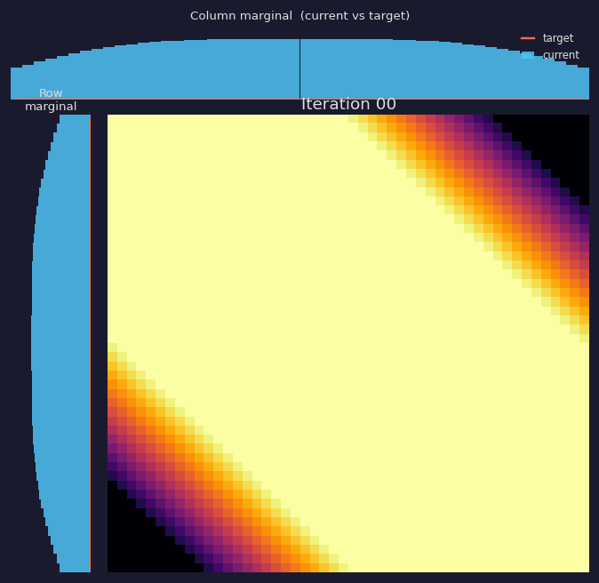
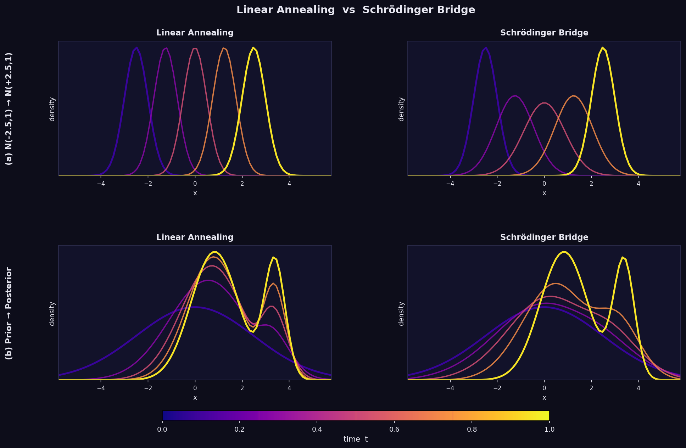

Diffusion Schrödinger Bridge
STAT 547E — Zachary Lau
Overview
- Motivation — why care about Schrödinger Bridges?
- Brownian Bridge — the building block
- Multiple Particles — mixtures of Brownian bridges
- Unknown Pairings — a Bayesian perspective
- Many Particles — deriving the KL objective
- The Schrödinger Bridge Problem — formal statement
- Connection to Diffusion Models
- Solving the SB Problem — Sinkhorn and beyond
- MCMC Simulation
- Conclusion
Motivation
- Diffusion models have become the dominant paradigm in generative modelling
- Standard approach: run a forward diffusion until it reaches a known prior, then learn the reverse
- A key question: how long is long enough?
- Schrödinger Bridges provide a principled answer: find the diffusion that satisfies exact marginal constraints in finite time
Key references:
- Ho et al. (2020) — DDPM
- Song & Ermon (2019) — score-based
- De Bortoli et al. (2021) — Diffusion SB
Brownian Bridge — Setup
- Consider a particle starting at \(X_0 = a\) undergoing standard Brownian motion
- Conditioning on \(X_0 = a\), the marginal at time \(t\) is \[X_t \mid X_0 = a \sim \mathcal{N}(a,\, t)\]
- Now additionally observe the endpoint \(X_1 = b\)
- Question: what is the distribution of \(X_t \mid X_0 = a, X_1 = b\)?
Brownian Bridge — Derivation
By the Markov property, \(X_1 \mid X_t \sim \mathcal{N}(X_t,\, 1-t)\), so
\[\begin{pmatrix} X_t \\ X_1 \end{pmatrix} \Bigg| X_0 = a \;\sim\; \mathcal{N}\!\left( \begin{pmatrix} a \\ a \end{pmatrix},\; \begin{pmatrix} t & t \\ t & 1 \end{pmatrix} \right)\]
Conditioning on \(X_1 = b\) (via the Schur complement):
\[\boxed{X_t \mid X_0 = a,\; X_1 = b \;\sim\; \mathcal{N}\!\left(ta + (1-t)b,\; t(1-t)\right)}\]
- Linear drift interpolating \(a \to b\)
- Variance \(t(1-t)\) is symmetric — peaks at \(t = \tfrac{1}{2}\)
Brownian Bridge — Visualisation

Multiple Independent Particles
- Now consider \(N\) particles, each independently following Brownian motion
- We observe all starting positions \(a_1, \ldots, a_N\) and endpoints \(b_1, \ldots, b_N\)
- Each particle traverses its own Brownian bridge: \[X^i_t \mid X^i_0 = a_i,\; X^i_1 = b_i \;\sim\; \mathcal{N}(ta_i + (1-t)b_i,\; t(1-t))\]
- The collective density at time \(t\) is a mixture of Gaussians
This is the key building block — the Schrödinger Bridge is a weighted version of exactly this.
Unknown Pairings — Setting
- Suppose we observe starting positions \(\{a_i\}\) and ending positions \(\{b_j\}\), but we don’t know which particle is which
- How should we pair them?
- Approach: place a uniform prior over all permutations \(\pi\), then condition on the observed displacements
The Brownian likelihood for pairing \((a_i, b_j)\) is \[\mathcal{L}(a_i, b_j) \propto \exp\!\left(-\tfrac{1}{2}(a_i - b_j)^2\right)\]
Unknown Pairings — Posterior
The posterior over pairings \((\mathbf{i}, \mathbf{j})\) is
\[p(\mathbf{i}, \mathbf{j}) \propto \prod_{(i,j)} \exp\!\left(-\tfrac{1}{2}(a_i - b_j)^2\right)\]
Connection to cross-entropy: let \(q\) be the empirical transport measure and \(r(i,j) \propto \exp(-\tfrac{1}{2}(a_i-b_j)^2)\) be the reference. Then
\[\log p(\mathbf{i}, \mathbf{j}) = -N \cdot H(q, r)\]
For large \(N\) it concentrates near the minimiser of cross-entropy
Many Particles — Setting
- Scale up: \(M\) particles at each of \(N\) locations — total \(MN\) particles
- Track the fraction \(Q_{ij}\) = fraction starting at \(a_i\) ending at \(b_j\)
- Marginal constraints: each row and column of \(Q\) must sum to \(\tfrac{1}{N}\)
- Key distinction: microstate (which particle goes where) vs macrostate (\(Q\) matrix)
Number of microstates for a given \(Q\): \[\frac{(NM)!}{\displaystyle\prod_{i,j}(NM Q_{ij})!}\] This is a multinomial coefficient — the entropy factor.
Many Particles — Stirling’s Approximation
Using Stirling’s approximation on \(\log p(Q)\):
\[\log p(Q) = NM\bigl(H(q) - H(q, r)\bigr) + \text{const}\]
\[= -NM \cdot \mathrm{KL}(q \,\|\, r) + \text{const}\]
As \(M \to \infty\):
\[Q^* = \arg \min \mathrm{KL}(q \,\|\, r)\]
We have derived the principle of maximum entropy from first principles, and discovered the Schrödinger Bridge.
The Schrödinger Bridge Problem
Definition. Given marginals \(\mu\) and \(\nu\) on \(\mathcal{X}\), the (static) Schrödinger Bridge is the joint distribution \(Q^*\) on \(\mathcal{X} \times \mathcal{X}\) that:
- Satisfies \(X_0 \sim \mu\) and \(X_1 \sim \nu\)
- Minimises \(\mathrm{KL}(Q \,\|\, R)\), where \(R\) is the reference Brownian motion
The reference is \(R(x_0, x_1) \propto \exp\!\left(-\tfrac{1}{2}(x_0-x_1)^2\right)\).
Once \(Q^*\) is found, the path distribution is a mixture of Brownian bridges with weights given by the transport plan.
Connection to Optimal Transport

The KL objective is an entropy-regularised Monge-Kantorovich problem. The Brownian variance \(\sigma^2\) controls the regularisation strength. As \(\sigma^2 \to 0\), the SB collapses to the deterministic OT plan.
Schrödinger Bridge and Diffusion Models
Traditional diffusion models:
- Choose a forward diffusion with a known stationary distribution (the prior)
- Run until approximately stationary
- Learn the backwards process (i.e. the score)
Problem: step 2 requires trusting convergence — no finite-time guarantee.
Solution via SB: instead of hoping for convergence, find the diffusion process that is closest to Brownian motion while exactly satisfying the marginal constraints at \(t=0\) and \(t=1\).
The SB forces the forward dynamics to reach the prior in finite time.
Solving the SB: Sinkhorn Algorithm
For finite support, the solution is elegant:
- Initialise \(Q\) at the reference distribution \(R\)
- Rescale rows to satisfy the \(X_0 \sim \mu\) marginal
- Rescale columns to satisfy the \(X_1 \sim \nu\) marginal
- Repeat until convergence
(Sinkhorn 1964): this converges to the minimum-KL solution!
It is equivalent to coordinate ascent in the dual problem.
Sinkhorn in Action

Each frame alternates between row and column rescaling. The transport plan gradually satisfies both marginal constraints while minimising KL to the reference.
Scaling Up: DeBortoli et al. (2021)
Sinkhorn is infeasible for continuous distributions, high dimensions, large datasets.
Key idea: model the conditional distributions as diffusion processes instead of explicit matrices.
Algorithm (DSBM — Diffusion SB Matching):
- Initialise at data distribution; use reference for forward dynamics
- Learn backward dynamics by sampling data, propagating forward
- Learn forward dynamics by sampling prior, propagating backward under learned reverse
- Repeat
This is a continuous Sinkhorn algorithm where each conditional distribution is parameterised by a neural SDE.
Annealing vs Schrödinger Bridge

Annealing follows geometric interpolation of densities (may pass through low-probability regions). The Schrödinger bridge instead follows the most probable Brownian paths between the marginals.
MCMC Simulation
For a finite particle system, we can simulate the posterior over transport plans directly using Metropolis-Hastings.
Key observation: swapping the endpoints of two particles changes the energy by \[\Delta E = (x_i - y_j)^2 + (x_j - y_i)^2 - (x_i - y_i)^2 - (x_j - y_j)^2\]
The MH acceptance ratio is \(\min(1,\, e^{-\Delta E / \varepsilon})\).
Algorithm: alternates between sweeping bit-masked swaps (to explore efficiently) and random-pairing shuffles (for global moves).
Bit-Flip MH Algorithm
Input: \(M = 2^N\) particles \((x_i, y_i)\), regularisation \(\varepsilon > 0\)
Repeat:
For each bit \(b \in \{0, \ldots, N-1\}\), for each pair \((i, j = i \oplus 2^b)\):
- Compute \(\Delta E = (x_i - y_j)^2 + (x_j - y_i)^2 - (x_i - y_i)^2 - (x_j - y_j)^2\)
- Accept swap with probability \(\min(1,\; e^{-\Delta E/\varepsilon})\)
After a full \(N\)-bit cycle, draw random permutation \(\sigma\) and propose random-pair swaps via MH
Toggle phase: alternate between swapping \(y\)-values and swapping \(x\)-values
Correctness: each swap proposal is reversible; each phase preserves the empirical marginal of the swapped coordinate. The target is log-concave, so multimodality is not an issue.
Demo
- Visualises the MCMC algorithm in real time in the browser
Conclusion
We built up the Schrödinger Bridge problem from first principles:
| Building block | Key idea |
|---|---|
| Brownian Bridge | Conditional diffusion, \(\mathcal{N}(ta+(1-t)b,\; t(1-t))\) |
| Multiple particles | Mixture of Gaussians |
| Unknown pairings | Uniform prior + Brownian likelihood → cross-entropy |
| Many particles | Stirling → KL divergence, entropy regularisation |
| SB problem | Minimise \(\mathrm{KL}(Q \| R)\) subject to marginals |
| Sinkhorn | Iterated marginal rescaling = coordinate ascent in dual |
| DSBM | Neural SDE parameterisation of Sinkhorn |
| MCMC | Bit-flip MH on finite particle system |
References
- Ho et al. (2020). Denoising Diffusion Probabilistic Models. NeurIPS.
- Song & Ermon (2019). Generative Modeling by Estimating Gradients of the Data Distribution. NeurIPS.
- De Bortoli et al. (2021). Diffusion Schrödinger Bridge with Applications to Score-Based Generative Modeling. NeurIPS.
- Schrödinger (1932). Sur la théorie relativiste de l’électron et l’interprétation de la mécanique quantique. Ann. Inst. Henri Poincaré.
- Sinkhorn (1964). A Relationship Between Arbitrary Positive Matrices and Doubly Stochastic Matrices. Ann. Math. Statist.
- Léonard (2013). A survey of the Schrödinger problem and some of its connections with optimal transport. Discrete Contin. Dyn. Syst.